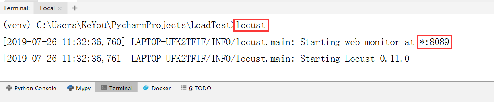
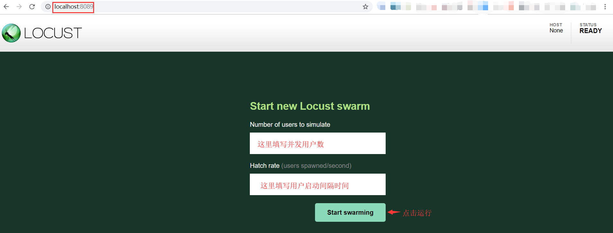
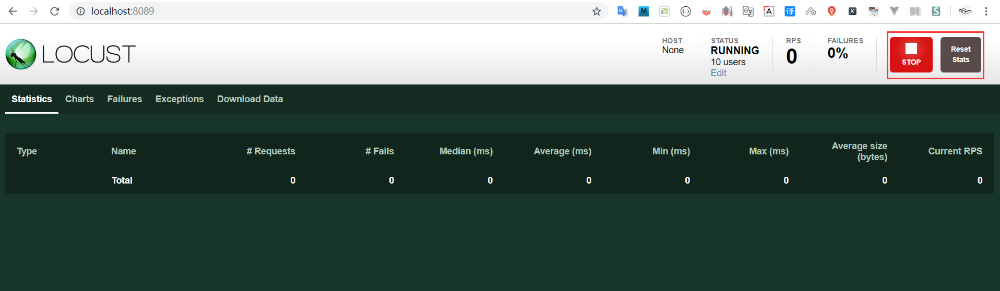
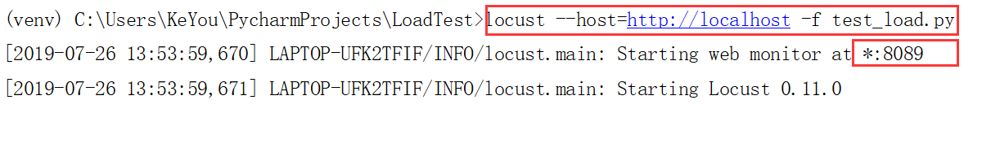
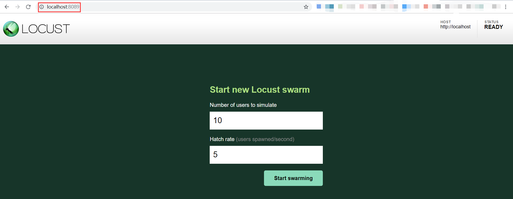
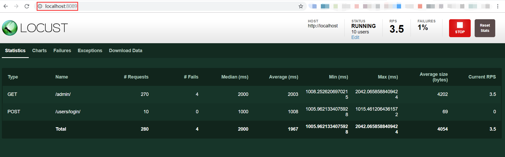
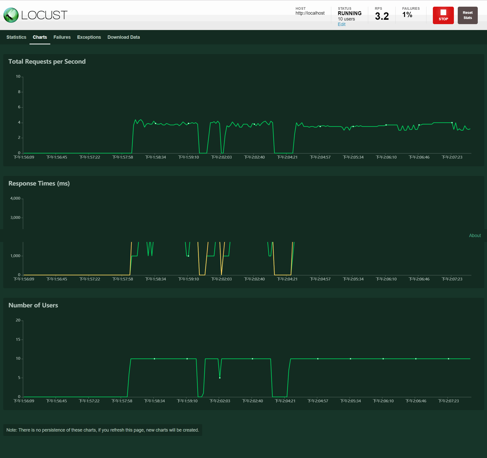
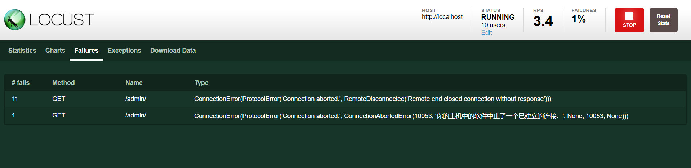
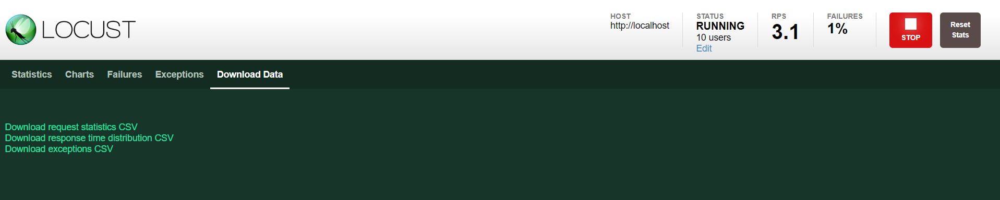
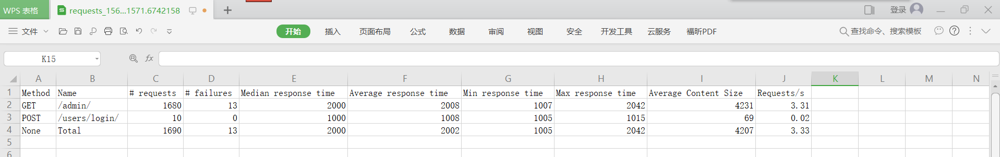

locust库
pip install locustiopip install -i https://pypi.douban.com/simple locustio安装成功之后，在cmd控制台将会新增一条命令，可输入如下命令查看：
locust --help在项目根目录下创建locustfile.py文件
from locust import Locust, TaskSet, task
class MyTasks(TaskSet):
"""
创建测试任务类，需要继承TaskSet
可以添加多个测试任务
"""
# 每个测试任务，往往会以实例方法的形式来呈现
# 同时需要使用task装饰器来装饰测试任务
@task
def one_task(self):
print("执行一个伟大的测试任务!")
class RunTasks(Locust):
"""
创建运行测试类，需要继承Locust父类
"""
task_set = MyTasks # 指定测试任务类，使用task_set覆盖父类的类属性
min_wait = 2000 # 指定启动任务间隔的时间范围（单位毫秒）：2~5秒之间
max_wait = 5000 # 使用min_wait、max_wait覆盖父类的类属性
执行性能测试
# 打开Pycharm Terminal控制台
# 运行如下命令：
locust运行之后，控制台会在本地监听一个端口

a. 程序文件要命名为 locustfile.py才行
b. 假如命名为one_example.py，则需要这样运行
locust -f one_example.py
在浏览器打开UI设置界面


from locust import HttpLocust, TaskSet, task
class AdminLoadTest(TaskSet):
"""
创建后台管理站点压测类，需要继承TaskSet
可以添加多个测试任务
"""
def login(self):
"""
登录实例方法
:return:
"""
self.client.post("http://localhost:8088/users/login/",
{"user_account": "admin", "password": "123456"})
def logout(self):
"""
登出实例方法
:return:
"""
self.client.get("http://localhost:8088/users/logout/")
def on_start(self):
"""
当任何一个task调度执行之前,
on_start实例方法会被调用
先登录
:return:
"""
self.login()
def on_stop(self):
"""
当任何一个task调度执行之后,
on_stop实例方法会被调用
后登出
:return:
"""
self.logout()
@task
def admin_index(self):
"""
对后台主页进行压测
:return:
"""
self.client.get("http://localhost:8088/admin/")
class RunLoadTests(HttpLocust):
"""
创建运行压测类
"""
task_set = AdminLoadTest
注意：--host参数指定http主机地址，-f参数指定压测程序文件名

设置并发用户数为10，每5秒创建一个用户

压测过程截图

美轮美奂的压测报告

压测失败详情

下载压测统计数据

下载的压测统计数据csv文件
